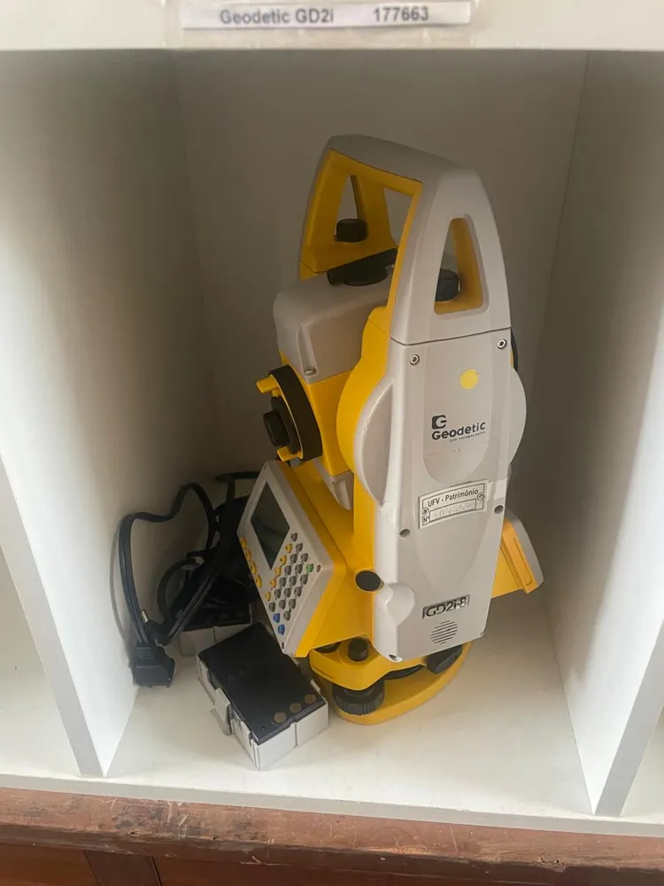

1
Escolha datas e equipamentos
O acervo mostra o que está livre no período. Você informa a atividade, o local e quem vai a campo.
Retirada18/11/2026
Devolução20/11/2026

Geodetic GD8i2 de 2 livres
Observação: com tripé e dois prismas.